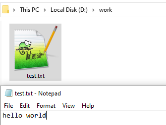
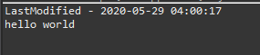
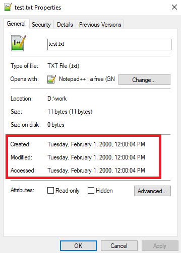
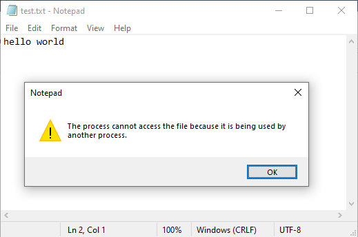
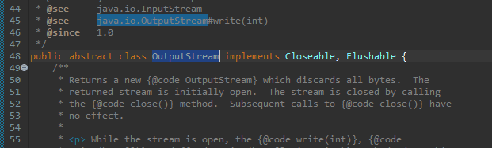
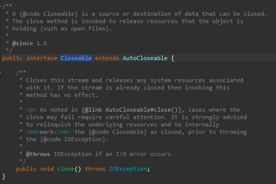
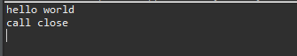

[Java] 26. ファイル(IO)を扱う方法(ファイル作成、ファイル修正、アクセス日付変更とIOをclose(リソース返却)する理由、Closableインタフェース)
こんにちは。明月です。
この投稿はJavaでファイル(IO)を扱う方法(ファイル作成、ファイル修正、アクセス日付変更とIOをclose(リソース返却)する理由、Closableインタフェース)に関する説明です。
ITでI/Oという意味はInput/Outputということで入力装置、出力装置という意味です。入力装置とはマウス、キーボードなどのパソコンにデータを入力する装置という意味だし、出力装置とはモニター、プリンターなどの出力する装置という意味です。
でも、プログラムでI/Oという意味はファイルを作成、読み込みなどのファイル扱うことという意味です。少し違いますね。
プログラムで一番よく使うリソースはソケット(通信)とファイル(I/O)でファイルを作成、読み込みは重要な領域です。
まず、データを処理する装置ということはCPUがあるし、一時的にデータを格納するメモリがあります。
CPUはデータを計算する機能しかないし、メモリはデータを格納する機能だけありますが、プログラムが終了するとデータは自動に削除されるので、プログラムでデータを記録する装置が必要です。プログラム終了と関係ない装置がハードディスクということがあります。
ファイルをハードディスクに格納するためにはメモリ構造のStackとHeap構造からBinaryタイプに変換しなければならないです。またはCPUとメモリの速度は速いですが、ハードディスクを遅いので、その速度の差を合わせるリソース管理(コネクション)が必要です。その機能があるリソースライブラリをIOということになります。
IOで使うデータタイプはbyte(unsigned char)です。
まず、Stringになっているデータをファイルに格納しましょう。
import java.io.File;
import java.io.FileOutputStream;
import java.io.OutputStream;
public class Example {
// 実行関数
public static void main(String[] args) {
try {
// ファイルに格納するtest変数を宣言
String test = "hello world";
// Stringタイプをbyteタイプに変換
byte[] binary = test.getBytes();
// ファイルインスタンスを生成
File file = new File("d:\\work\\test.txt");
// Streamインスタンス生成
OutputStream stream = new FileOutputStream(file);
// OutputStreamでtestのバイナリを作成
stream.write(binary);
// Streamリソースを返却
stream.close();
} catch (Throwable e) {
e.printStackTrace();
}
}
}

上の例を確認すればdドライブのworkディレクトリのtest.txtファイルにhello worldというstringタイプのデータを作成しました。
ここでFileクラスとOutputStreamインタフェースを継承したFileOutputStreamを使いました。
Fileクラスはファイルのメーター情報があるクラスです。ファイルの内容よりファイルが作成した時間、ファイルのサイズなどの情報があります。Javaのbyteの配列でデータを作成しましたが、そのデータはメモリのHeapにあるので、一列になっているかを分からないです。つまり、論理的にプログラム上では配列ですが、メモリ上では分からないという意味です。
なので、データを一列に並べる概念が必要ですが、それがStreamということです。
改めてまとめるとbyte[]のデータをメモリ上にbyte[0]から順番並びでデータを作成することです。
IOはメモリと性能差異が存在するので、それを合わせる機能が必要ですが、それがコネクションです。つまり、ファイル作成が終わったらリソースを返却してプログラムのパフォーマンスを戻せなければならないです。
この内容に関しては後で詳しく説明します。
ファイルを作成したので、今回はファイルを呼び込んでコンソール出力しましょう。
import java.io.File;
import java.io.FileInputStream;
import java.io.InputStream;
import java.nio.file.Files;
import java.nio.file.Paths;
import java.nio.file.attribute.FileTime;
import java.text.DateFormat;
import java.text.SimpleDateFormat;
import java.util.Calendar;
import java.util.Date;
public class Example {
// 日付フォーマット
private static DateFormat format = new SimpleDateFormat("yyyy-MM-dd hh:mm:ss");
public static void main(String[] args) {
try {
// ファイルインスタンス生成
File file = new File("d:\\work\\test.txt");
// ファイルが作成した日付出力
System.out.println("LastModified - " + format.format(new Date(file.lastModified())));
// Calendarインスタンスを持ち込む。
Calendar c = Calendar.getInstance();
// 2000年1月1日12時に設定
c.set(2000, 01, 01, 12, 00);
// ファイルの作成時間変更
Files.setAttribute(Paths.get(file.getAbsolutePath()), "basic:creationTime", FileTime.fromMillis(c.getTimeInMillis()), java.nio.file.LinkOption.NOFOLLOW_LINKS);
// ファイルの更新時間変更
file.setLastModified(c.getTimeInMillis());
// ファイルの最後にアクセスした時間変更
Files.setAttribute(Paths.get(file.getAbsolutePath()), "basic:lastAccessTime", FileTime.fromMillis(c.getTimeInMillis()), java.nio.file.LinkOption.NOFOLLOW_LINKS);
// ファイルサイズでbinaryを生成
byte[] binary = new byte[(int)file.length()];
// Streamインスタンスを生成
InputStream stream = new FileInputStream(file);
// ファイルを読み込む。
stream.read(binary);
// Streamリソースを返却
stream.close();
// バイナリをStringタイプに変換してコンソール出力
System.out.println(new String(binary));
} catch (Throwable e) {
e.printStackTrace();
}
}
}

上の例はInputStreamを利用してファイルからデータを読み込んでコンソールに出力しました。
または、Fileクラスを利用してファイルの情報も変更しました。

作成日付、更新日付、最後にアクセスした日付がすべて2000年度に変更されました。
Fileクラスを利用すれば更新日付は修正可能ですが、作成日付と最後にアクセスした日付はFilesのクラスを利用してsetAttribute関数で変更しなければならないです。
ファイルIOはプログラムでCPUとメモリリソースではなく、ハードディスクのリソースを利用することです。
ハードディスクのリソースは一つのプログラムが独占して使うことではなく、様々なプログラムが同時に使うリソースです。また、このリソースの速度はメモリとハードディスク間に差異があります。
その差異をなくして、書き込む時に一時的にファイルをロックを掛けるためにコネクションの概念があります。つまり、ファイルをコネクションする間には速度が遅いハードディスクに合わせるし、他のプログラムからアクセスできないような概念です。
なので、ファイルの使いが終われば、コネクションリソースを返却してロックなどを戻さなければならないです。
import java.io.File;
import java.io.FileOutputStream;
import java.io.OutputStream;
public class Example {
// 実行関数
public static void main(String[] args) {
try {
// ファイルに格納するtest変数を宣言
String test = "hello world\r\n";
// Stringタイプをbyteタイプに変換
byte[] binary = test.getBytes();
// ファイルインスタンス生成
File file = new File("d:\\work\\test.txt");
// Streamインスタンス生成
OutputStream stream = new FileOutputStream(file);
// OutputStreamにtestのバイナリ作成
stream.write(binary);
// システムを止まる。
synchronized (stream) {
stream.wait();
}
} catch (Throwable e) {
e.printStackTrace();
}
}
}
上のソースを実行すればOutputStreamでファイルのコネクション(connection)を繋ぎままにシステムを止まりました。
つまり、IO Connectionが繋いでいる状況でプログラムを終了しないし、リソース返却もしない状況です。
この状況でメモ帳から当該なファイルを開いて修正しようと思えばエラーが発生します。

つまり、connectionが繋いでいる状況ならほかのプログラムでアクセスができないことという意味です。
上の例は簡単なプログラムなのでcloseの呼び出しを忘れてもプログラムが終了すれば自動にすべてのリソースが返却します。でも、プログラムが終了しないサーバの場合はcloseの呼び出しを忘れたらどのようになるでしょう？
最悪ならサーバが終了する前まで他のプロセスからアクセスができないです。
このコネクション(connection)みたいにcloseが必要なクラスはClosableインタフェースを継承して必ずclose関数を呼び出します。


Closableインタフェースを継承したクラスは自動にclose関数を呼び出せる方法があります。
import java.io.Closeable;
// Closeableインタフェース継承
public class Example implements Closeable {
// 再定義関数
@Override
public void close() {
// コンソール出力
System.out.println("call close");
}
// 実行関数
public static void main(String[] args) {
// 例外処理tryにifの条件文みたいにClosableを継承したクラスを入れればtryの領域が終わる時に自動にcloseを呼び出す。
try (Example e = new Example()) {
// コンソール出力
System.out.println("hello world");
}
}
}

上のソースみたいにtryのifの条件文にClosableインタフェースを継承したクラスタイプのインスタンスを入れればスタック領域が自動にclose関数を呼び出します。
import java.io.File;
import java.io.FileOutputStream;
import java.io.OutputStream;
public class Example {
// 実行関数
public static void main(String[] args) {
// ファイルに格納するtest変数を宣言
String test = "hello world\r\n";
// Stringタイプをbyte[]タイプに変換
byte[] binary = test.getBytes();
// ファイルインスタンス生成
File file = new File("d:\\work\\test.txt");
// Streamインスタンス生成
// 例外処理tryにifの条件文みたいにClosableを継承したクラスを入れればtryの領域が終わる時に自動にcloseを呼び出す。
try (OutputStream stream = new FileOutputStream(file)) {
stream.write(binary);
// Streamクラスはthrows IOExceptionが付けているのでcatch処理もする。
} catch (Throwable e) {
e.printStackTrace();
}
}
}

ここまでJavaでファイル(IO)を扱う方法(ファイル作成、ファイル修正、アクセス日付変更とIOをclose(リソース返却)する理由、Closableインタフェース)に関する説明でした。
ご不明なところや間違いところがあればコメントしてください。
- [Java] 33. オープンライブラリを参照する方法(eclipseからmavenを連結)2019/09/24 19:35:54
- [Java] 32. Reflection機能を使う方法(Annotation編)2019/09/24 00:19:25
- [Java] 31. Reflection機能を使う方法(Variable編)2019/09/20 22:34:40
- [Java] 30. Reflection機能を使う方法(Method編)2019/09/19 20:20:10
- [Java] 29. Reflection機能を使う方法(Class編)2019/09/18 20:02:14
- [Java] 28. 文字タイプ(CharacterSet)とエンディアン(endian)で変換する方法2019/09/17 20:22:02
- [Java] 27. ネットワーク通信(Socket)をする方法2019/09/16 23:42:46
- [Java] 26. ファイル(IO)を扱う方法(ファイル作成、ファイル修正、アクセス日付変更とIOをclose(リソース返却)する理由、Closableインタフェース)2019/09/13 20:03:58
- [Java] 25. Objectクラス(notify、waitの使い方)2019/09/13 00:58:31
- [Java] 24. Javaの同期化(Synchronized)とデッドロック(Deadlock)2019/09/11 23:06:09
- [Java] 23. スレッドプール(Threadpool)を使う方法2019/09/10 21:55:36
- [Java] 22.スレッド(Thread)を使う方法2019/09/06 22:30:49
- [Java] 21. アノテーション(Annotation)を使う方法2019/09/05 22:58:20
- [Java] 20. iterator(for-each)とStream APIを使う方法2019/09/04 20:11:28
- [Java] 19. ラムダ(Lambda)を使う方法2019/09/03 20:37:14
- [Java] WebSocketでチャット履歴をローディングする方法2021/06/15 18:34:45
- [Java] WebSocketを利用してユーザ(サイト運用者)が他のユーザとチャットする方法2021/06/15 17:20:08
- [Design pattern] 1-2. ビルダーパターン(Builder pattern)2021/06/11 19:06:28
- [Design pattern] 1-1. シングルトンパターン(Singleton pattern)2021/06/09 19:40:05
- [Design Pattern] デザインパターンの紹介2021/06/08 20:42:36
- [Tools] Dbeaver(無料Sql queryブラウザツール)2021/04/28 18:26:49
- [Bootstrap] HTMLデザインのフレームワークのBootstrap紹介2020/07/30 19:06:36
- [Python] メール(smtplib)を送信する方法2020/07/27 18:38:43
- [Python] HttpConnection(requestsモジュール)でウェブサーバーで接続する方法2020/07/20 14:41:51
- [Python] Excel(openpyxl)を扱う方法2020/07/16 16:40:31
- [Python] ファイル圧縮、解凍(zipfile)する方法2020/07/14 19:14:22
- [Python] Apache cgiでPythonを使う方法2020/07/09 19:58:19
- [Python] Web serverを起動する方法(http.server)2020/07/09 00:13:13
- [Python] WebSocketを使う方法2020/07/07 17:29:18
- [Python] PythonとJavaのソケット通信する方法2020/07/03 18:35:50